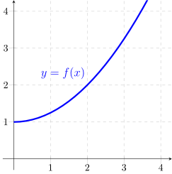

- (a)
- Given that \(f'(2)=1\), find the linear approximation \(L\) to the function \(f\) at \(a=2\). [2]
- (b)
- Sketch the graph of \(L\) in the figure above.
- (c)
- Use the linear approximation \(L\) to estimate the value of \(f(3)\). Is this an underestimate or overestimate? EXPLAIN. [2]
- (d)
- When \(x\) changes from \(a=2\) to \(a+\Delta x=3\), the change in the function \(y=f(x)\), \(\Delta y\), is given by \(\Delta y=f(a+ \Delta x)-f(a)\). Draw and label \(\Delta y\) and \(\Delta x\) in the figure above.
- (e)
- When \(x\) changes from \(a=2\) to \(a+ \Delta x=3\), the change in the linear approximaton, \(dy\), is given by \(dy=L(a+\Delta x)-L(a)=f'(a)\Delta x\). Draw and label \(L(x)\), \(dx\) and \(dy\) (differential) in the figure above.